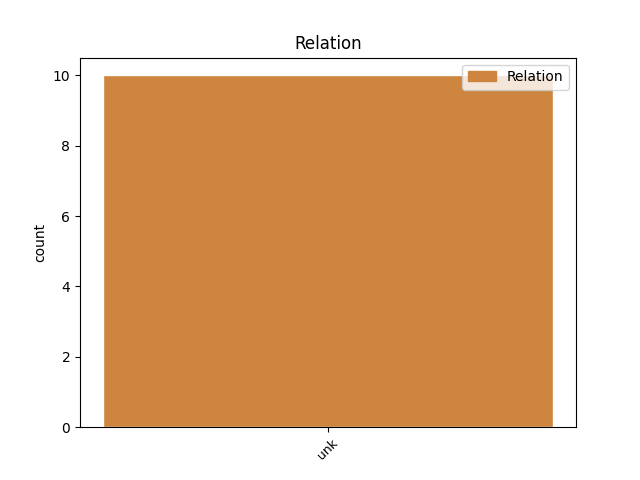
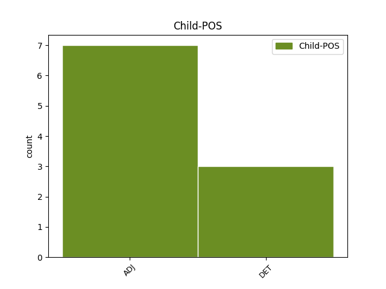

Distribution of features within this leaf



Agreement Rules sorted by frequency.
- When the dependent token is the unk(unk) of the head token, and the head token is NOUN and the dependent token is ADJ.
1 Spatřil _ _ _ _ 0 _ _ _
2 v _ _ _ _ 0 _ _ _
3 něm _ _ _ _ 0 _ _ _
4 , _ _ _ _ 0 _ _ _
5 jak _ _ _ _ 0 _ _ _
6 se _ _ _ _ 0 _ _ _
7 otevřely _ _ _ _ 0 _ _ _
8 dveře _ _ _ _ 0 _ _ _
9 jeho _ _ _ _ 0 _ _ _
10 pokoje _ _ _ _ 0 _ _ _
11 a _ _ _ _ 0 _ _ _
12 jak _ _ _ _ 0 _ _ _
13 se _ _ _ _ 0 _ _ _
14 k _ _ _ _ 0 _ _ _
15 němu _ _ _ _ 0 _ _ _
16 blíží _ _ _ _ 0 _ _ _
17 postava postava NOUN NNFS1-----A---- Case=Nom|Gender=Fem|Number=Sing|Polarity=Pos 0 _ _ _
18 , _ _ _ _ 0 _ _ _
19 celá celý ADJ AAFS1----1A---- Case=Nom|Degree=Pos|Gender=Fem|Number=Sing|Polarity=Pos 17 unk _ _
20 černě _ _ _ _ 0 _ _ _
21 oděná _ _ _ _ 0 _ _ _
22 , _ _ _ _ 0 _ _ _
23 obklopená _ _ _ _ 0 _ _ _
24 září _ _ _ _ 0 _ _ _
25 zlatých _ _ _ _ 0 _ _ _
26 křídel _ _ _ _ 0 _ _ _
27 . _ _ _ _ 0 _ _ _
1 Jestli _ _ _ _ 0 _ _ _
2 je _ _ _ _ 0 _ _ _
3 to _ _ _ _ 0 _ _ _
4 pravda pravda NOUN NNFS1-----A---- Case=Nom|Gender=Fem|Number=Sing|Polarity=Pos 0 _ _ _
5 , _ _ _ _ 0 _ _ _
6 jak _ _ _ _ 0 _ _ _
7 to ten DET PDNS1---------- Case=Nom|Gender=Neut|Number=Sing|PronType=Dem 4 unk _ SpaceAfter=No
8 , _ _ _ _ 0 _ _ _
9 že _ _ _ _ 0 _ _ _
10 já _ _ _ _ 0 _ _ _
11 o _ _ _ _ 0 _ _ _
12 těchto _ _ _ _ 0 _ _ _
13 změnách _ _ _ _ 0 _ _ _
14 nevím _ _ _ _ 0 _ _ _
15 ? _ _ _ _ 0 _ _ _
Disagree Examples:
1 Po _ _ _ _ 0 _ _ _
2 dvou _ _ _ _ 0 _ _ _
3 týdnech týden NOUN NNIP6-----A---- Animacy=Inan|Case=Loc|Gender=Masc|Number=Plur|Polarity=Pos 0 _ _ _
4 první první ADJ CrFS4---------- Case=Acc|Gender=Fem|Number=Sing|NumType=Ord 3 unk _ SpaceAfter=No
5 . _ _ _ _ 0 _ _ _
1 Ukázalo _ _ _ _ 0 _ _ _
2 se _ _ _ _ 0 _ _ _
3 , _ _ _ _ 0 _ _ _
4 že _ _ _ _ 0 _ _ _
5 po _ _ _ _ 0 _ _ _
6 pražském _ _ _ _ 0 _ _ _
7 přelíčení _ _ _ _ 0 _ _ _
8 se _ _ _ _ 0 _ _ _
9 tatínkovy _ _ _ _ 0 _ _ _
10 spisy _ _ _ _ 0 _ _ _
11 vrátily _ _ _ _ 0 _ _ _
12 na _ _ _ _ 0 _ _ _
13 gestapo _ _ _ _ 0 _ _ _
14 v _ _ _ _ 0 _ _ _
15 Kolíně _ _ _ _ 0 _ _ _
16 , _ _ _ _ 0 _ _ _
17 kde _ _ _ _ 0 _ _ _
18 právě _ _ _ _ 0 _ _ _
19 ten _ _ _ _ 0 _ _ _
20 člověk _ _ _ _ 0 _ _ _
21 , _ _ _ _ 0 _ _ _
22 který _ _ _ _ 0 _ _ _
23 měl _ _ _ _ 0 _ _ _
24 na _ _ _ _ 0 _ _ _
25 svědomí _ _ _ _ 0 _ _ _
26 uvěznění _ _ _ _ 0 _ _ _
27 matky _ _ _ _ 0 _ _ _
28 , _ _ _ _ 0 _ _ _
29 právě _ _ _ _ 0 _ _ _
30 ten _ _ _ _ 0 _ _ _
31 polír _ _ _ _ 0 _ _ _
32 z _ _ _ _ 0 _ _ _
33 hotelu _ _ _ _ 0 _ _ _
34 Rut _ _ _ _ 0 _ _ _
35 , _ _ _ _ 0 _ _ _
36 dal _ _ _ _ 0 _ _ _
37 opět _ _ _ _ 0 _ _ _
38 na _ _ _ _ 0 _ _ _
39 fascikl _ _ _ _ 0 _ _ _
40 razítko razítko NOUN NNNS4-----A---- Case=Acc|Gender=Neut|Number=Sing|Polarity=Pos 0 _ _ _
41 NÁVRAT _ _ _ _ 0 _ _ _
42 NEŽÁDOUCÍ žádoucí ADJ AAIS1----1N---- Animacy=Inan|Case=Nom|Degree=Pos|Gender=Masc|Number=Sing|Polarity=Neg 40 unk _ _
43 a _ _ _ _ 0 _ _ _
44 otce _ _ _ _ 0 _ _ _
45 poslali _ _ _ _ 0 _ _ _
46 do _ _ _ _ 0 _ _ _
47 pekla _ _ _ _ 0 _ _ _
48 koncentračních _ _ _ _ 0 _ _ _
49 táborů _ _ _ _ 0 _ _ _
50 . _ _ _ _ 0 _ _ _
1 Leoš _ _ _ _ 0 _ _ _
2 spal _ _ _ _ 0 _ _ _
3 spánkem spánek NOUN NNIS7-----A---- Animacy=Inan|Case=Ins|Gender=Masc|Number=Sing|Polarity=Pos 0 _ _ _
4 spravedlivých spravedlivý ADJ AAMP2----1A---- Animacy=Anim|Case=Gen|Degree=Pos|Gender=Masc|Number=Plur|Polarity=Pos 3 unk _ _
5 na _ _ _ _ 0 _ _ _
6 Valentýnině _ _ _ _ 0 _ _ _
7 posteli _ _ _ _ 0 _ _ _
8 a _ _ _ _ 0 _ _ _
9 Janička _ _ _ _ 0 _ _ _
10 chrupala _ _ _ _ 0 _ _ _
11 vedle _ _ _ _ 0 _ _ _
12 něj _ _ _ _ 0 _ _ _
13 . _ _ _ _ 0 _ _ _
1 Ohromeni _ _ _ _ 0 _ _ _
2 tímto _ _ _ _ 0 _ _ _
3 zásahem zásah NOUN NNIS7-----A---- Animacy=Inan|Case=Ins|Gender=Masc|Number=Sing|Polarity=Pos 0 _ _ _
4 , _ _ _ _ 0 _ _ _
5 provázeným _ _ _ _ 0 _ _ _
6 záplavou _ _ _ _ 0 _ _ _
7 cizích _ _ _ _ 0 _ _ _
8 slov _ _ _ _ 0 _ _ _
9 , _ _ _ _ 0 _ _ _
10 kterému který DET P4IS3---------- Animacy=Inan|Case=Dat|Gender=Masc|Number=Sing|PronType=Int,Rel 3 unk _ _
11 bůhvíjak _ _ _ _ 0 _ _ _
12 , _ _ _ _ 0 _ _ _
13 ale _ _ _ _ 0 _ _ _
14 rozuměli _ _ _ _ 0 _ _ _
15 , _ _ _ _ 0 _ _ _
16 podali _ _ _ _ 0 _ _ _
17 mu _ _ _ _ 0 _ _ _
18 s _ _ _ _ 0 _ _ _
19 určitou _ _ _ _ 0 _ _ _
20 nedůvěrou _ _ _ _ 0 _ _ _
21 své _ _ _ _ 0 _ _ _
22 peníze _ _ _ _ 0 _ _ _
23 , _ _ _ _ 0 _ _ _
24 doufajíce _ _ _ _ 0 _ _ _
25 v _ _ _ _ 0 _ _ _
26 zázrak _ _ _ _ 0 _ _ _
27 , _ _ _ _ 0 _ _ _
28 který _ _ _ _ 0 _ _ _
29 jim _ _ _ _ 0 _ _ _
30 slíbil _ _ _ _ 0 _ _ _
31 . _ _ _ _ 0 _ _ _